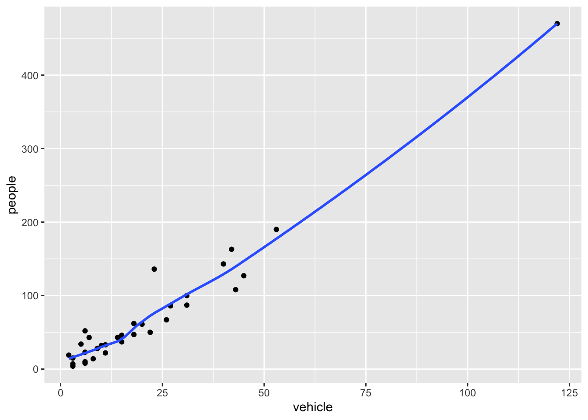
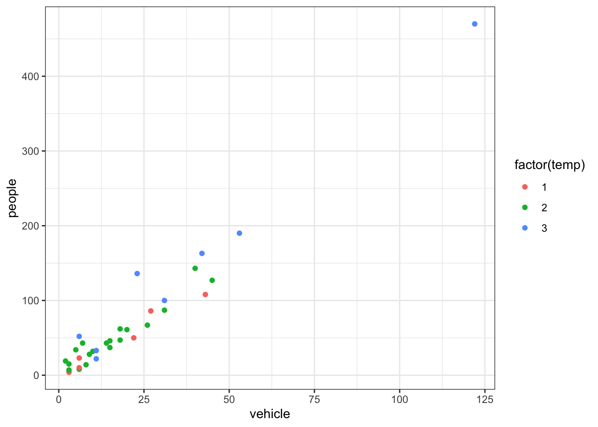

Code
getwd() # check your working directory[1] "/Users/mmarraff/Documents/Classes/161.250/Data_Analysis_Course/workshops"Code
# setwd() # if you know the directory you want R to look inR and RStudioIf you have not installed R and RStudio, refer to the study guide for some instructions.
To start this workshop download the source from the class website. You can now save this to your computer and make notes in this document.
R basicsWorking directory
In RStudio, set the working directory under the Session menu. It is a good idea to start your analysis as a new project in the File menu so that the entire work and data files can be saved and re-opened easily later on.
getwd() # check your working directory[1] "/Users/mmarraff/Documents/Classes/161.250/Data_Analysis_Course/workshops"# setwd() # if you know the directory you want R to look inR/RStudio as a calculator
In RStudio, use the File >> New File >> R Script menu to type or copy and paste the commands and execute them
Type 1+1 to see 2 on the console (or ->Run the code in RStudio).
1+1[1] 2Type a=1;b=2;a/b to see 0.5.
a=1;b=2;a/b[1] 0.5Note that semicolon separates various commands. It is optional to use them as long as you type the commands one by one as follows:
a=1
b=2
a/b[1] 0.5There are many built-in functions. Try the following.
27^3 sqrt(10) round(sqrt(10),2) abs(-4) log(10) exp(10) rnorm(100) mean(rnorm(100)) sd(rnorm(100))
# your code goes here
# make yourself notes about what these functions doYou may wonder what was the base used for log(10). A help on this can be obtained by placing a question mark (?) before log as ?log or by help(log)
There are a few exceptions. The command ?if wont work but ?"if" will. In other words, ?"log" or help("log") are safer ways of getting help on “built-in” functions.
In RStudio, use the R Editor (menu File > New Script) to type the commands and submit them (shortcut: CNTRL+R).`
Why does this code not work?
my_variable <- 10
my_varıableMake a variable with a sequence of numbers between 1 and 10.
# your code goes hereDefault examples
The command example() will produce the available HELP examples, and will work for most functions. For example, try example(boxplot). You will see many boxplot examples such as the following:
boxplot(count ~ spray, data = InsectSprays, col = "lightgray")
There are also demos available, explore using the command demo(). The basic R system produces somewhat old style graphs.
So we will be largely using the newer plotting system ggplot which is part of the tidyverse suite of packages; see https://www.tidyverse.org/.
Let’s load that package now:
library(tidyverse)A huge number of other dedicated packages are available to improve the power of R. Many R packages are hosted at a repository called CRAN (Comprehensive R Archive Network). The package install option within RStudio can download and install these optional packages under the menu Packages >> Install. You can also do this using the command install.packages. For example
install.packages(c("tidyverse", "car"), dependencies = TRUE)
This command installs two packages tidyverse and car in one go.
Contributed R packages are grouped in various headings at https://cran.r-project.org/web/views/. They can be installed in bulk using the ctv package command install.views().
You might have to install quite a few packages as you work through this course.
This course will be using Quarto *.qmd files rather than raw *.R files. Heard of Rmarkdown? Well, Quarto is the successor to Rmarkdown. So, if you’re just starting to use R, then you should begin with Quarto rather than Rmarkdown, because most/all new development will be going into Quarto.
Here’s some information to get you started: https://quarto.org/docs/get-started/hello/rstudio.html.
And some other useful tips: https://r4ds.hadley.nz/quarto.
The studyguide illustrates a step-by-step guide to setting up a Quarto project.
If the data file is stored locally, you should put the data into the same directory as your Quarto or R markdown script. That way, you can (usually) load it easily without having to type the full pathway (e.g., mydata.csv rather than C:/Users/anhsmith/Work/Project1/data/mydata.csv). Better yet, Projects make this much easier.
You can also load data from the web using a URL. For example,
read_csv("https://www.massey.ac.nz/~anhsmith/data/rangitikei.csv")Rows: 33 Columns: 10
── Column specification ────────────────────────────────────────────────────────
Delimiter: ","
dbl (10): id, loc, time, w.e, cl, wind, temp, river, people, vehicle
ℹ Use `spec()` to retrieve the full column specification for this data.
ℹ Specify the column types or set `show_col_types = FALSE` to quiet this message.# A tibble: 33 × 10
id loc time w.e cl wind temp river people vehicle
<dbl> <dbl> <dbl> <dbl> <dbl> <dbl> <dbl> <dbl> <dbl> <dbl>
1 1 1 2 1 1 2 2 1 37 15
2 2 1 1 1 1 2 1 2 23 6
3 3 1 2 1 1 2 2 3 87 31
4 4 2 2 1 1 2 1 1 86 27
5 5 2 1 1 1 2 2 2 19 2
6 6 2 2 1 2 1 3 3 136 23
7 7 1 2 2 2 2 2 3 14 8
8 8 1 2 1 2 2 2 3 67 26
9 9 1 1 2 1 3 1 2 4 3
10 10 2 2 1 2 2 2 3 127 45
# ℹ 23 more rowsWe’d usually want to store the data as an object though, like so:
rangitikei <- read_csv("https://www.massey.ac.nz/~anhsmith/data/rangitikei.csv")Rows: 33 Columns: 10
── Column specification ────────────────────────────────────────────────────────
Delimiter: ","
dbl (10): id, loc, time, w.e, cl, wind, temp, river, people, vehicle
ℹ Use `spec()` to retrieve the full column specification for this data.
ℹ Specify the column types or set `show_col_types = FALSE` to quiet this message.Now the data are available in R as an object.
glimpse(rangitikei)Rows: 33
Columns: 10
$ id <dbl> 1, 2, 3, 4, 5, 6, 7, 8, 9, 10, 11, 12, 13, 14, 15, 16, 17, 18,…
$ loc <dbl> 1, 1, 1, 2, 2, 2, 1, 1, 1, 2, 2, 2, 2, 1, 1, 1, 2, 2, 2, 1, 1,…
$ time <dbl> 2, 1, 2, 2, 1, 2, 2, 2, 1, 2, 2, 2, 2, 2, 2, 2, 2, 1, 2, 1, 2,…
$ w.e <dbl> 1, 1, 1, 1, 1, 1, 2, 1, 2, 1, 2, 1, 1, 1, 1, 2, 2, 1, 1, 1, 2,…
$ cl <dbl> 1, 1, 1, 1, 1, 2, 2, 2, 1, 2, 1, 2, 1, 1, 1, 2, 2, 2, 1, 2, 2,…
$ wind <dbl> 2, 2, 2, 2, 2, 1, 2, 2, 3, 2, 2, 2, 1, 2, 2, 2, 2, 2, 2, 3, 2,…
$ temp <dbl> 2, 1, 2, 1, 2, 3, 2, 2, 1, 2, 2, 3, 1, 2, 2, 2, 3, 2, 2, 2, 2,…
$ river <dbl> 1, 2, 3, 1, 2, 3, 3, 3, 2, 3, 1, 3, 1, 3, 1, 1, 2, 1, 2, 2, 3,…
$ people <dbl> 37, 23, 87, 86, 19, 136, 14, 67, 4, 127, 43, 190, 50, 47, 32, …
$ vehicle <dbl> 15, 6, 31, 27, 2, 23, 8, 26, 3, 45, 7, 53, 22, 18, 10, 3, 11, …Try importing the Telomeres data file (in Excel format) available at
https://rs.figshare.com/ndownloader/files/22850096
# your code goes hereNote that Excel files usually contain blanks for missing or unreported data or allocate many rows for variable description, which can cause issues while importing them.
Consider the study guide dataset rangitikei.txt (Recreational Use of the Rangitikei river) again. The first 10 rows of this dataset are shown below:
id loc time w.e cl wind temp river people vehicle
1 1 1 2 1 1 2 2 1 37 15
2 2 1 1 1 1 2 1 2 23 6
3 3 1 2 1 1 2 2 3 87 31
4 4 2 2 1 1 2 1 1 86 27
5 5 2 1 1 1 2 2 2 19 2
6 6 2 2 1 2 1 3 3 136 23
7 7 1 2 2 2 2 2 3 14 8
8 8 1 2 1 2 2 2 3 67 26
9 9 1 1 2 1 3 1 2 4 3
10 10 2 2 1 2 2 2 3 127 45The description of the variables is given below:
loc - two locations were surveyed, coded 1, 2
time - time of day, 1 for morning, 2 for afternoon
w.e - coded 1 for weekend, 2 for weekday
cl- cloud cover, 1 for >50%, 2 for <50%
wind- coded 1 through 4 for increasing wind speed
temp - temperature, 1, 2 or 3 increasing temp
river- murkiness of river in 3 increasing categories
people - number of people at that location and time
vehicle- number of vehicles at that location at that time
How many rows are in my.data? How many columns? How can you find that in R?
Find the mean of vehicle and the median of people using built in R functions.
If have not installed ggplot2 or tidyverse, install it with the following commands.
install.packages("ggplot2")
install.packages("tidyverse")We can now load the ggplot2 library with the commands:
library(ggplot2)In order to work with ggplot2, we must have a data frame or a tibble containing our data. We need to specify the aesthetics or how the columns of our data frame can be translated into positions, colours, sizes, and shapes of graphical elements.
ggplot(my.data) +
aes(x = vehicle, y = people) +
geom_point()The aes part defines the “aesthetics”, which is how columns of the dataframe map to graphical attributes such as x and y position, colour, size, etc. An aesthetic can be either numeric or categorical and an appropriate scale will be used. After this, we add layers of graphics. geom_point layer is employed to map x and y and we need not specify all the options for geom_point.
Why does the following give an error and how would you fix it?
ggplot(data = my.data) +
geom_point()We can add a title using labs() or ggtitle() functions. Try-
ggplot(my.data) +
aes(x = vehicle, y = people, color = river) +
geom_point() +
ggtitle("No. of people vs No. of vehicles")or
ggplot(my.data)+
aes(x = vehicle, y = people) +
geom_point() +
labs(title = "No. of people vs No. of vehicles")Note that labs() allows captions and subtitles.
Remake the above graph, adjusting the x axis to say Vehicles using the labs() function.
geom_smooth is additionally used to show trends.
ggplot(my.data) +
aes(x = vehicle, y = people) +
geom_point() +
geom_smooth()`geom_smooth()` using method = 'loess' and formula = 'y ~ x'
Run this code in your head and predict what the output will look like. Then, run the code in R and check your predictions.
ggplot(my.data) +
aes(x = vehicle, y = people) +
geom_point()+
geom_smooth(se = FALSE)`geom_smooth()` using method = 'loess' and formula = 'y ~ x'
Similar to geom_smooth, a variety of geoms are available.
ggplot(my.data) +
aes(x = factor(wind), y = people) +
geom_boxplot()Each geom accepts a particular set of mappings;for example geom_text() accepts a labels mapping. Try-
ggplot(my.data) +
aes(x = vehicle, y = people) +
geom_point() +
geom_text(aes(label = w.e),
size = 5)Will these two graphs look different? Why/why not?
ggplot(
data = my.data,
mapping = aes(x = vehicle, y = people)
) +
geom_point() +
geom_smooth()`geom_smooth()` using method = 'loess' and formula = 'y ~ x'ggplot() +
geom_point(
data = my.data,
mapping = aes(x = vehicle, y = people)
) +
geom_smooth(
data = my.data,
mapping = aes(x = vehicle, y = people)
)`geom_smooth()` using method = 'loess' and formula = 'y ~ x'The faceting option allows a collection of small plots with the same scales. Try-
ggplot(my.data) +
aes(x=vehicle, y=people) +
geom_point() +
facet_wrap(~ river) Faceting is the ggplot2 option to create separate graphs for subsets of data. ggplot2 offers two functions for creating small multiples:
facet_wrap(): define subsets as the levels of a single grouping variablefacet_grid(): define subsets as the crossing of two grouping variablesThe following arguments are common to most scales in ggplot2:
Specific scale functions may have additional arguments. Some of the available Scales are:
| Scale | Examples |
|---|---|
scale_color_ |
scale_color_discrete |
scale_fill_ |
scale_fill_continuous |
scale_size_ |
scale_size_manual |
scale_size_discrete |
|
scale_shape_ |
scale_shape_discrete |
scale_shape_manual |
|
scale_linetype_ |
scale_linetype_discrete |
scale_x_ |
scale_x_continuous |
scale_x_log |
|
scale_x_date |
|
scale_y_ |
scale_y_reverse |
scale_y_discrete |
|
scale_y_datetime |
In RStudio, we can type scale_ followed by TAB to get the whole list of available scales.
Try-
ggplot(my.data) +
aes(x = vehicle, y = people, color = factor(temp)) +
geom_point() +
scale_x_continuous(name = "No. of Vehicles") +
scale_y_continuous(name = "No. of people") +
scale_color_discrete(name = "Temperature")The other coding option is shown below:
ggplot(my.data) +
aes(x = vehicle, y = people, color = factor(temp)) +
geom_point() +
xlab("No. of Vehicles") +
ylab("No. of people") +
labs(colour="Temperature") Note that a desired graph can be obtained in more than one way.
The ggplot2 theme system handles plot elements (not data based) such as
Built-in themes include:
theme_gray() (default)theme_bw()theme_minimal()theme_classic()p1 <- ggplot(my.data) +
aes(x = vehicle, y = people, color = factor(temp)) +
geom_point()Note that the graph is assigned an object name p1 and nothing will be printed unless we then print the object p1.
p1 <- ggplot(my.data) +
aes(x = vehicle, y = people, color = factor(temp)) +
geom_point()
p1Try-
p1 + theme_light()
p1 + theme_bw()
Specific theme elements can be overridden using theme(). For example:
p1 + theme_minimal() +
theme(text = element_text(color = "red"))
All theme options can be seen with ?theme.
To specify a theme for a whole document, use
theme_set(theme_minimal())Minimal graphing can be done using the qplot option that will produce a few standard formatted graphs quickly.
qplot(people, vehicle, data = my.data, colour = river)Warning: `qplot()` was deprecated in ggplot2 3.4.0.Try-
qplot(people, data = my.data)
qplot(people, fill=factor(river), data=my.data)
qplot(people, data = my.data, geom = "dotplot")
qplot(factor(river), people, data = my.data, geom = "boxplot")
A cheat sheet for ggplot2 is available at https://www.rstudio.com/resources/cheatsheets/ (optional to download). There are many other packages which incorporate ggplot2 based graphs or dependent on it.
The library patchwork allows complex composition arbitrary plots, which are not produced using the faceting option. Try
library(patchwork)
p1 <- qplot(people, data = my.data, geom = "dotplot")
p2 <- qplot(people, data = my.data, geom = "boxplot")
p3 <- ggplot(my.data, aes(x = vehicle, y = people)) + geom_point()
(p1 + p2) / p3 +
plot_annotation("My title", caption = "My caption")Bin width defaults to 1/30 of the range of the data. Pick better value with
`binwidth`.tidyrBy the phrase tidy data, it is meant the preferred way of arranging data that is easy to analyse. The principles of tidy data are:
Simple Manipulations
There is always more than one-way of manipulating the data, producing summaries and tables from raw data.
One of the simplest manipulations on a batch of data we may do is to change the data type say numeric to character. For example, the television viewing time data in the text file tv.csv is read into a dataframe by the command line
my.data <- read.csv(
"https://www.massey.ac.nz/~anhsmith/data/tv.csv",
header =TRUE
)We can improve the read.csv command to recognise the data type while reading the table as follows, using the read_csv command from the readr package:
my.data <- read_csv(
"https://www.massey.ac.nz/~anhsmith/data/tv.csv",
col_types = "nfcc"
)The argument col_types = "nfcc" stands for {numeric, factor, character, character}, to match the order of the columns.
my.data# A tibble: 46 × 4
TELETIME SEX SCHOOL STANDARD
<dbl> <fct> <chr> <chr>
1 1482 1 1 4
2 2018 1 1 4
3 1849 1 1 4
4 857 1 1 4
5 2027 2 1 4
6 2368 2 1 4
7 1783 2 1 4
8 1769 2 1 4
9 2534 1 1 3
10 2366 1 1 3
# ℹ 36 more rowsWe often do a summary of a numerical variable for a given categorical variable. For example, we like to see obtain the summary statistics of TV viewing times for various schools. The commands
attach(my.data)
by(TELETIME, SCHOOL, summary)We employed the by() command above and instead, we may also use tapply() aggregate() functions:
tapply(TELETIME, SCHOOL, summary)
aggregate(TELETIME, list(SCHOOL), summary)
A tabulated summary of categorical data is obtained using the table() command.
my.data <- read.csv(
"https://www.massey.ac.nz/~anhsmith/data/rangitikei.csv",
header=TRUE
)
wind <- my.data |> pull(wind)
river <- my.data |> pull(river)
table(wind, river)It is sometimes convenient to work with matrices for some R functions such as apply(). For example, the number of admissions data in hospital.txt data can be formed as a matrix. Note that this is possible because we have the same number of observations for each hospital location.
data <- read.table(
"https://www.massey.ac.nz/~anhsmith/data/hospital.txt",
header=TRUE,
sep=",")
M <- data |>
select(NORTH1, NORTH2, NORTH3,
SOUTH1, SOUTH2, SOUTH3) |>
sqrt()
means <- apply(M, 1, mean)
sds <- apply(M, 1, sd)
plot(means, sds)